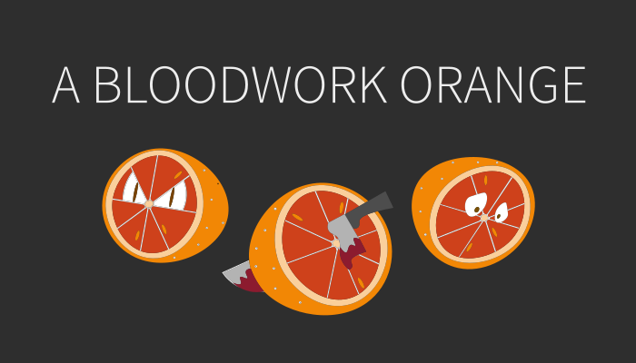

Kristina Seefeld Andersen
Multimediedesigner
Kreativ udfoldelse med brugeroplevelsen i fokus.
Mit navn er Kristina og jeg er i gang med mit 3. semester på KEA, hvor jeg studerer multimediedesign. Jeg har på mit studie arbejdet med digitaldesign og digitale designprocesser. Multimediedesignuddannelsen breder sig ud over flere områder, som jeg finder spændende.
Mine interesser ligger inden for grafisk design, jeg finder især UX og UI-designer processerne spændende. At få lov at bygge en bro mellem brugeroplevelsen og virksomhedens produkt igennem research, brugerundersøgelser, testning etc. for at udvikle og skabe en velfungerende brugergrænseflade for produktet. At skabe illustrationer i illustrator er også en del af min guilty pleasure.
Derudover interesserer jeg mig også for kodning med CSS og Html, som gør mig i stand til at arbejde tværfagligt i teams. Jeg er detaljeorienteret, som gør mig i stand til at se de små ting som andre oftest overser.
Erfaring
Jeg har nuværende tidspunkt arbejdet i Figma og diverse Adobe programmer såsom XD, Photoshop, Illustrator, InDesign og Premiere Pro.
Derudover har arbejdet med Html, CSS og JavaScript som gør mig i stand til at udvikle, optimere, programmere og giver mig kompetencer til at arbejde tværfagligt i teams.
Kompetancer
- Adobe XD
- Adobe Illustrator
- Adobe Photoshop
- Adobe Premier Pro
- Adobe Audition
- Figma
- HTML5
- CSS
- JavaScript
- Tailwind CSS
Udvalgte skoleprojekter
Spil
Et simpelt spil lavet på 1. semester, hvor vi lærte at fremstille interaktive brugergrænseflader, der engagerer og motiverer brugeren. Spillet er skabt ved idégenerering og designet fra bunden og rentegnet i Illustrator og kodet med HTML, CSS-animationer og JavaScript.
Se spillet
webfeature
Webfeature en 3. semesters gruppeopgave. En webbaseret, interaktiv multimedie dokumentar, der kombinerer tekst, foto, video, lyd, animation og grafik. Med udgangspunkt i et designbrief, skulle udvikle et visuelt koncept, via wireframes, prototyper, som efterfølgende skulle implementeres på et website. Målet var at lave en løsning, som brugerne kunne anvende med så lidt friktion som muligt. Der blev brugt Tailwind CSS til at løse opgaven.